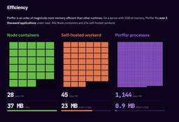
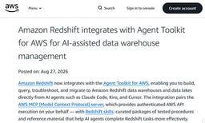
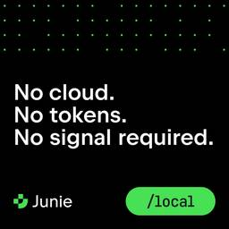

Publickey
https://www.publickey1.jp/
Enterprise ITに軸足を置き、新たにIT業界を変えつつあるクラウドコンピューティングやHTML5など最新の話題を、ブロガー独自の分析を交え、充実した記事で紹介するブログです。毎日更新しています。
フィード
VS Code誕生から現在までの物語「The Story of VS Code」YouTubeで公開。作者のエリック・ガンマ氏はなぜIBMからMSへ移籍してVS Codeを作ることになったか 116
116
Publickey
Visual Studio Code（以下、VS Code）はいまやITエンジニアのあいだで最も人気のあるコードエディタの地位を確立しています。 VS Codeはオープンソースであり、そしてWindows、Mac、Linuxのマルチプラット...
9時間前

JavaScriptをC言語にコンパイルする「porffor」がアルファ版に到達。ネイティブやWASMを生成可能 3
Publickey
JavaScriptを事前コンパイルしてC言語に変換するコンパイラ「porffor」（発音はpoor-for）がアルファ版に到達したことが発表されました（公式サイト、GitHubリポジトリ）。 作者のOliver Medhurst氏が明らか...
10時間前
Java誕生から現代に至る歴史をゴスリン氏ら関係者が語る公式ドキュメンタリー「The Java Story」、YouTubeで公開中 163
Publickey
Java言語が誕生してから30年以上の年月が経過しています。 Javaはもともと家庭用デバイスのための言語として作られたものの、結局は採用されずに失敗プロジェクトとして始まったことは多くの方がご存知でしょう。 そこから新たな展開としてWeb...
3日前

Webブラウザ上でターミナルのシミュレータを実行、GitやCLI、Vimなどを無料で学べる「WebTerm Learn」が公開 140
Publickey
Webブラウザ上でまるで本物のように振る舞うターミナルのシミュレータを実行し、そこでGitやLinuxのコマンドライン、Vimなどの操作を無料で学べる学習プラットフォーム「WebTerm Learn」を、株式会社initが公開しました。 W...
3日前

AWS、新たな太平洋海底ケーブル「Sta'O'Nuk」発表。420Tbps、2029年に稼働へ。集中リスク排除のため新たな陸揚げ拠点を採用 19
Publickey
Amazon Web Services（AWS）は、日本と米国を結ぶ新たな海底ケーブル「Sta'O'Nuk」を発表しました。2029年に稼働開始予定です。 海底ケーブルは20ペアの光ファイバーで構成され、420Tbpsの帯域を提供します。 ...
4日前
AWSをゲームで学べる「AWS Cloud Quest」に新バージョン「AWS Cloud Quest 2.0」登場！ AIによるバーチャル顧客と対話し、要件を聞き出して正しくソリューションに落とし込め 150
Publickey
Amazon Web Services（AWS）は、3DオープンワールドでAWSを学べるオンラインゲーム「AWS Cloud Quest」の新バージョン「AWS Cloud Quest 2.0」の提供を開始しました。 AWS Cloud Q...
4日前

AWSとAzureが最大100Gbpsでの相互接続を開始。これでAWSはAzure、Google Cloud、Oracle Cloudとのマルチクラウドをサポート 2
Publickey
Amzon Web Services（AWS）とマイクロソフトは、両社が協力してAWSとMicrosoft Azureを最大100Gbpsの高速な閉域網で相互接続することを発表しました（AWSの発表、マイクロソフトの発表）。 両社ともにプレ...
4日前

ボットの振る舞いを動的に学習して防御を改善し続ける、「Adaptive Intelligence」ボット検出エンジン、Cloudflareが発表 9
Publickey
Cloudflareは、ボットの侵入手段を同社のネットワーク全体から動的に学習し、防御を継続的に改善し続ける「Adaptive Intelligence」という仕組みを採用した新しいボット検出エンジンを発表しました。 Cloudflare&...
4日前

ClaudeにSalesforceを統合した「Claudeforce」、AnthropicとSalesforceが発表。Claudeから営業データ分析や顧客対応を実現 21
Publickey
SalesforceとAnthropicが「Claudeforce」を発表しました。 第一弾となる「Salesforce in Claude」では、Claudeの画面からプロンプトを入力するだけで、Salesforceのデータやワークフロー...
5日前

AIエージェントがRedshiftを操作してDWH構築や集計分析など可能に、Amazon RedshiftがAgent Toolkit for AWSと統合
Publickey
Amazon Web Services（AWS）は、同社がフルマネージドで提供するデータウェアハウスサービス「Amazon Redshift」が、Agent Toolkit for AWSと統合されたことを明らかにしました。 Agent T...
5日前

VS Code上で開発のセカンドオピニオンを別のAIエージェントから得られる「Rubber Duck」機能が実験的実装 4
Publickey
オープンソースで開発されているコードエディタ「Visual Studio Code」（以下、VS Code）の最新版となる「VS Code 1.135」で、開発に関するセカンドオピニオンをメインのAIエージェントとは別のAIエージェントに依...
5日前

DHH氏が開発するLinux OS「Omarchy Quattro」リリース。AIエージェントとをOSと統合、スキルによりAIエージェントがOSの設定や操作、プラグイン作成まで支援 120
Publickey
Ruby on Railsの作者として知られるDHH氏は、同氏が開発するデスクトップ向けLinux OS「Omarchy」の最新バージョンとなる「Omarchy 4.0」（Omarchy Quattro）をリリースしました。 Omarchy...
6日前

DHH氏が「Omacom Foundation」を設立、Omarchy推進によるLinuxデスクトップの本格普及を目指す。マイケル・デル、ジャック・ドーシーら著名人も出資 21
Publickey
DHH氏が開発したデスクトップ向けLinux「Omarchy」を推進するための団体「Omacom Foundation」が設立されました。 Omacomは「おまかせコンピューティング」の略 Omacom Foundationの「Omacom...
6日前

JetBrains、Mac上で動作するコーディングエージェント「Junie Local」提供開始。Claude Sonnet 4.5と同等の能力、RTX5090対応も開発中 64
Publickey
JetBrainsは、ローカルで動作するAIコーディングエージェント「Junie Local」の提供開始を発表しました。 Junie Localはその名称の通り完全にローカルマシン上で動作し、API使用料やモデル使用料などは一切不要。ソフト...
7日前

DuckDBの開発元であるDuckLabsがAWS子会社になると発表。DuckDBはオープンソースのMITライセンスを維持
Publickey
DuckDBの開発元であるDuckLabsは、来月（2026年9月）初旬にAWSの子会社となる予定であることを発表しました（DuckLabsの発表。AWSの発表） Today, @ducklabs_com is joining @awscl...
10日前